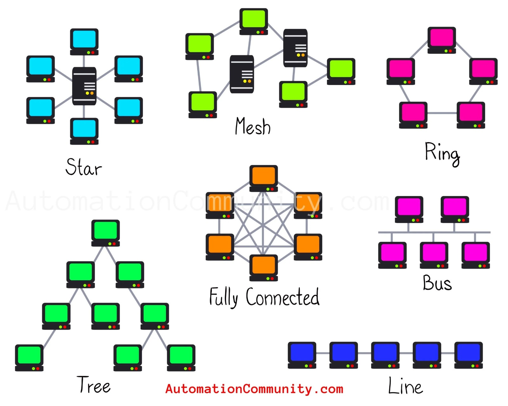

Month 1: Cybersecurity Foundations & Networking
Build a strong foundation in cybersecurity concepts, understand different types of hackers, and master networking fundamentals.
Cybersecurity Basics
🔐 What is Cybersecurity?
Cybersecurity is the practice of protecting systems, networks, servers, applications, and data from cyberattacks, unauthorized access, malware, and digital threats.
Cybersecurity focuses on:
- Confidentiality - Ensuring only authorized access
- Integrity - Maintaining data accuracy
- Availability - Ensuring systems are accessible
These three together are often called the CIA Triad.
⚠️ Why Cybersecurity is Important
Modern organizations, governments, and individuals rely heavily on digital systems.
Without cybersecurity:
- Data can be stolen
- Systems can be damaged
- Financial losses can occur
- Privacy can be violated
- Services can become unavailable
Importance of Cybersecurity in AI Era
Artificial Intelligence systems process large amounts of sensitive and important data. As AI becomes more common in healthcare, banking, automation, education, and defense, cybersecurity becomes even more important.
📊 Data Protection
AI systems rely on large datasets. If attackers steal or manipulate data, AI systems may behave incorrectly.
🤖 Model Manipulation
Attackers may try to manipulate AI models using malicious inputs.
👤 Privacy Risks
AI systems often handle personal and sensitive user information.
⚙️ Automation Risks
Compromised AI systems can automate attacks or make incorrect decisions.
Hacking vs Ethical Hacking
🚫 Hacking (Malicious)
Hacking refers to gaining access to systems, networks, or devices. Malicious hacking is illegal and performed to:
- Steal data
- Damage systems
- Disrupt services
- Gain unauthorized access
✅ Ethical Hacking
Ethical hacking is legal security testing performed with permission. Ethical hackers identify vulnerabilities before attackers exploit them.
Why Ethical Hacking Matters:
- Improves security
- Identifies vulnerabilities
- Helps organizations strengthen defenses
- Prevents future attacks
Types of Hackers
| Hacker Type | Description |
|---|---|
| White Hat | Ethical hackers who work legally to improve security. Main role includes penetration testing, vulnerability assessment, and security auditing. |
| Black Hat | Hackers who perform illegal activities for malicious purposes. Main activities include stealing data, spreading malware, financial fraud, and unauthorized access. |
| Grey Hat | Hackers who may violate rules but do not always act maliciously. They sometimes discover vulnerabilities without permission and later report them. |
| Script Kiddies | Beginners who use existing tools/scripts without deep technical understanding. |
| Hacktivists | Hackers motivated by political or social causes. |
| State-Sponsored | Hackers supported by governments for espionage or cyber warfare. |
Phases of Hacking
1. Reconnaissance
Gathering information about the target.
2. Scanning
Identifying open ports, systems, and services.
3. Gaining Access
Accessing the target system.
4. Maintaining Access
Keeping continued access to the compromised system.
5. Covering Tracks
Removing evidence and hiding activities.
Cyber Kill Chain
The Cyber Kill Chain is a cybersecurity framework developed by Lockheed Martin. It explains the stages of a cyberattack.
1. Reconnaissance
Attacker researches and identifies the target.
2. Weaponization
Creating a malicious payload tailored to exploit vulnerabilities.
3. Delivery
Transmitting the weapon to the target (email, USB, etc.).
4. Exploitation
The malicious code is triggered to exploit the vulnerability.
5. Installation
Installing malware or backdoor on the target system.
6. Command & Control
Establishing a channel for remote control of the compromised system.
7. Actions on Objectives
Attacker achieves their goal (data theft, destruction, etc.).
Defense Mechanisms:
Firewalls, Antivirus, IDS/IPS, Monitoring, Email filtering, Backups
Malware
Malware stands for malicious software. It is software designed to damage systems, steal information, disrupt operations, or gain unauthorized access.
🦠 Virus
Malicious code that attaches itself to files or programs.
🐛 Worm
Self-replicating malware that spreads automatically across networks.
🐴 Trojan
Malware disguised as legitimate software.
🔒 Ransomware
Malware that encrypts files and demands payment.
👁️ Spyware
Malware that secretly monitors user activities.
📢 Adware
Software that displays unwanted advertisements.
🔧 Rootkit
Malware designed to hide malicious activities and maintain privileged access.
Networking Fundamentals
🌐 What is a Network?
A network is a collection of connected devices that communicate and share resources.
🔗 What is Networking?
Networking is the process of connecting systems and devices for communication.
Types of Networks
LAN
Local Area Network - Covers a small geographic area like a home, office, or building.
MAN
Metropolitan Area Network - Covers a city or campus area.
WAN
Wide Area Network - Spans large geographic areas, connecting multiple LANs/MANs.
PAN
Personal Area Network - Network for personal devices within a short range.
CAN
Campus Area Network - Network within a university or corporate campus.
Network Topologies

📡 Bus Topology
All nodes link sequentially to a single coaxial cable terminated at both ends. Single point of failure if the backbone fractures.
⭐ Star Topology
Every device connects directly to a central Layer 2 Switch via RJ-45 unshielded twisted pair (UTP) cables. If one cable fails, only that node goes offline.
🔄 Ring Topology
Devices form a circular communication path. Data travels in one direction.
🕸️ Mesh Topology
High redundancy configuration where every host connects to every other host (n(n-1)/2 physical links). Used for mission-critical core distribution layers.
🌳 Tree Topology
Hierarchical network structure combining star and bus topologies.
🔀 Hybrid Topology
Combination of multiple topologies for flexibility and scalability.
Networking Devices
IP Addressing
An IP address is a unique identifier assigned to devices on a network.
IPv4
32-bit addressing system. Example: 192.168.1.1
IPv6
128-bit addressing system. Example: 2001:db8::1
Public IP
Accessible through the internet. Assigned by ISP.
Private IP
Used inside local/internal networks. Common ranges: 192.168.x.x, 10.x.x.x, 172.16.x.x – 172.31.x.x
Static IP
Manually assigned fixed IP address that doesn't change.
Dynamic IP
Automatically assigned IP address (usually via DHCP).
Loopback Address
Used for testing the local machine. Range: 127.0.0.0 – 127.255.255.255
IP Classes
Class A
For large networks. Range: 1.0.0.0 to 126.255.255.255
Class B
For medium networks. Range: 128.0.0.0 to 191.255.255.255
Class C
For small networks. Range: 192.0.0.0 to 223.255.255.255
Class D
For multicasting. Range: 224.0.0.0 to 239.255.255.255
Class E
For experimental purposes. Range: 240.0.0.0 to 255.255.255.255
Ports & Protocols
Logical ports are communication endpoints used by services and applications. Ports help systems identify which service should receive network traffic.
Total logical ports: 65,535
Port Ranges
| Port Range | Type |
|---|---|
| 0 – 1023 | Well-known Ports |
| 1024 – 49151 | Registered Ports |
| 49152 – 65535 | Dynamic/Private Ports |
View Complete Port Reference
Check out the full port mapping directory with all important ports and their services.
Go to Tool Hub →NAT & DMZ
🔄 NAT (Network Address Translation)
NAT converts private IP addresses into public IP addresses.
Why It Matters:
- Conserves IP addresses
- Hides internal systems
- Enables internet access
🛡️ DMZ (Demilitarized Zone)
A DMZ is a buffer network between the internet and internal network.
Why It Matters:
- Provides additional security for public-facing services
- Isolates external-facing services from internal network
Types of Servers
Hosting Types
🏢 Shared Hosting
Multiple users share the same server resources. Cost-effective but with limited control and resources.
🏰 Dedicated Hosting
Single user receives full server resources. Complete control, better performance, but more expensive.
Reconnaissance
🔍 Active Reconnaissance
Direct interaction with the target system. Examples include port scanning, network scanning, and vulnerability scanning. This method is faster but can be detected.
👀 Passive Reconnaissance
Indirect information gathering without directly interacting with the target. Examples include OSINT, social media analysis, and public record searches. This method is stealthier but slower.
Ready for Month 2?
Next month covers Virtual Labs, Linux & Scanning - where you'll set up your own cybersecurity lab environment.
Continue to Month 2 →